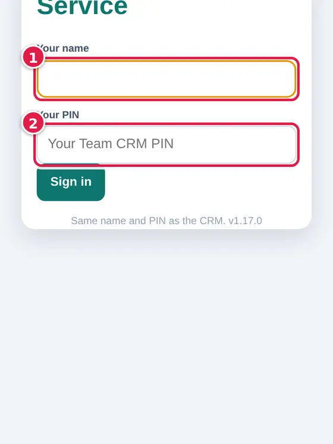
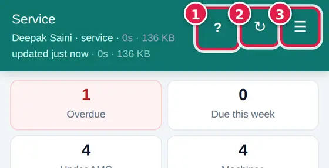
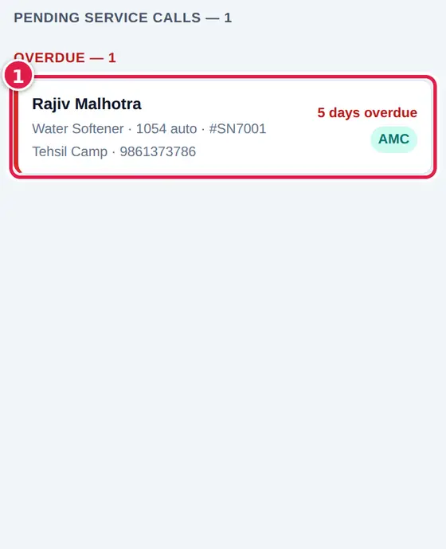
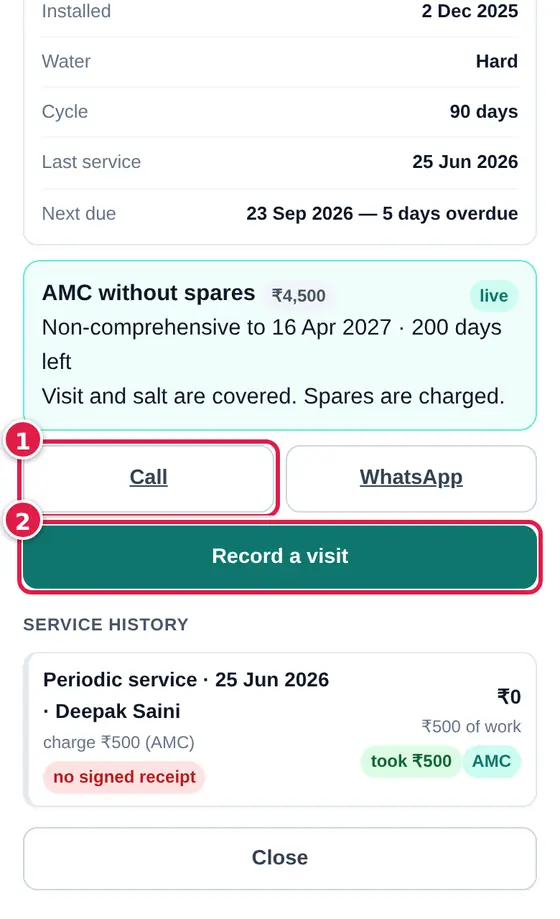
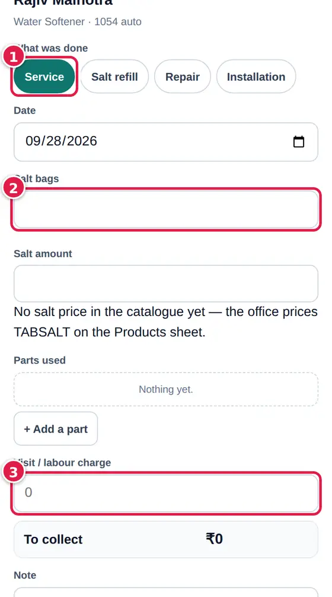
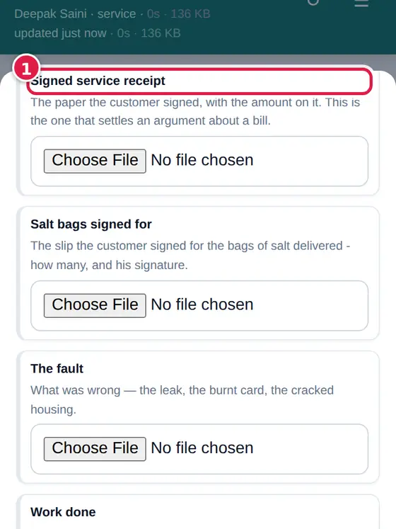
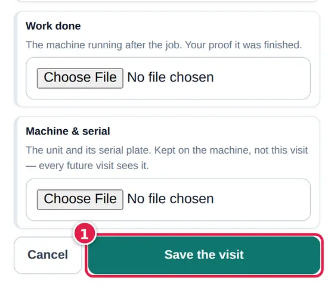
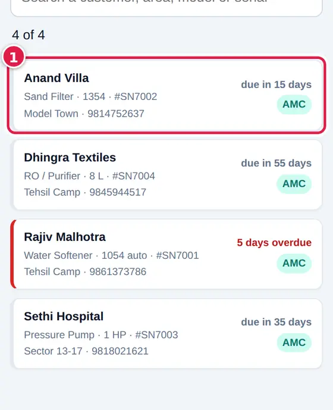
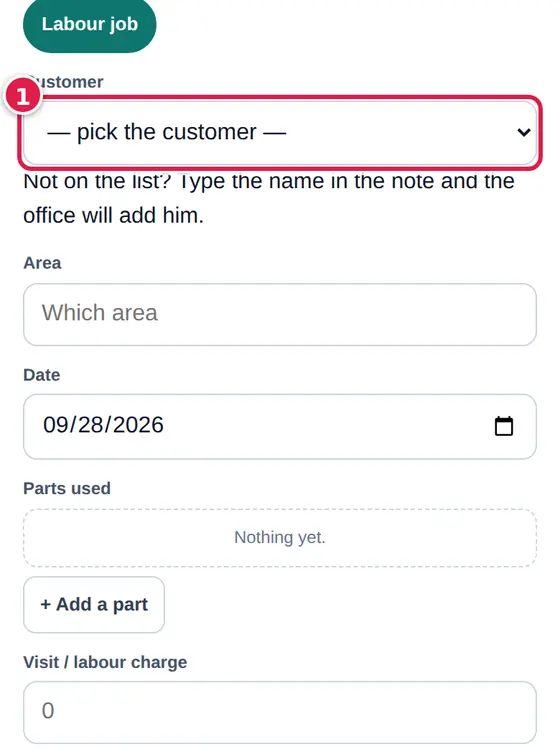

What is due today, the visit, the signed receipt - for the engineers.
The same name and PIN as the CRM. The bottom bar: Today, Machines, Labour job, My work, Account.


The counts at the top - Overdue, Due this week, Under AMC, Machines - and below them every machine waiting for a visit, overdue first.





Every machine on the book, with when it is next due. Tap one to open its card and its service history.

Plumbing or repair work where there is no machine on the book behind it.

Every visit you have recorded and what you collected - check it at the end of each day.
↑ ContentsWho is signed in on this phone, Face ID / fingerprint, and signing out.
↑ Contents